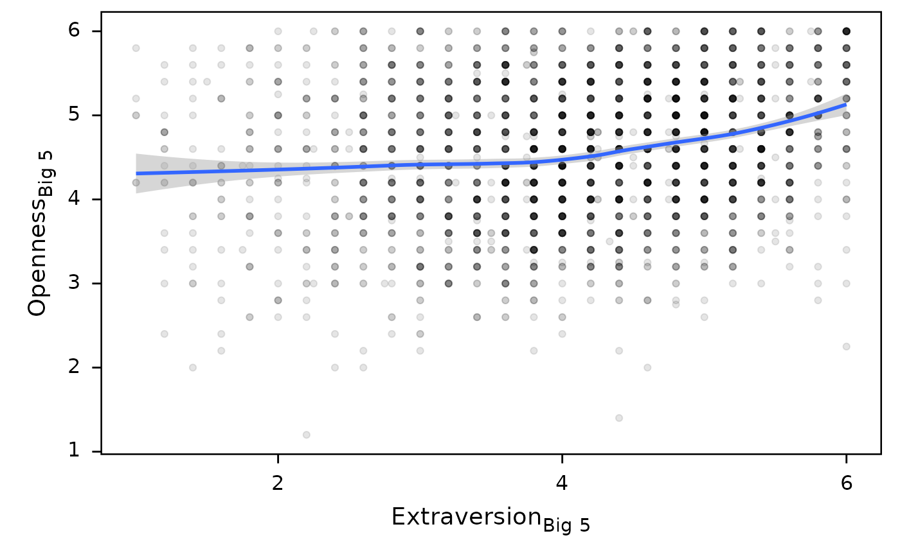
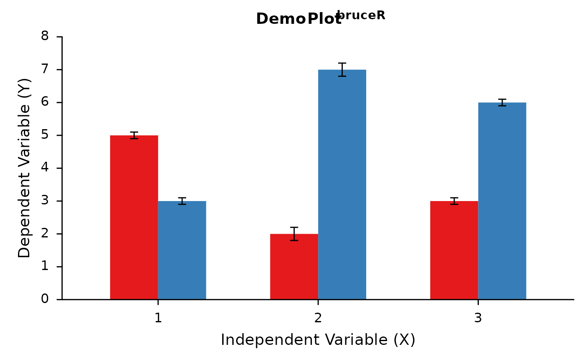

A nice ggplot2 theme that enables Markdown/HTML rich text.
Source: R/bruceR_stats_06_plot.R
theme_bruce.RdA nice ggplot2 theme for scientific publication.
It uses ggtext::element_markdown()
to render Markdown/HTML formatted rich text.
You can use a combination of Markdown and/or HTML syntax
(e.g., "*y* = *x*<sup>2</sup>") in plot text or title,
and this function draws text elements with rich text format.
For more usage, see:
Usage
theme_bruce(
markdown = FALSE,
base.size = 12,
line.size = 0.5,
border = "black",
bg = "white",
panel.bg = "white",
tag = "bold",
plot.title = "bold",
axis.title = "plain",
title.pos = 0.5,
subtitle.pos = 0.5,
caption.pos = 1,
font = NULL,
grid.x = "",
grid.y = "",
line.x = TRUE,
line.y = TRUE,
tick.x = TRUE,
tick.y = TRUE
)Arguments
- markdown
Use
element_markdown()instead ofelement_text(). Default isFALSE. If set toTRUE, then you should also useelement_markdown()intheme()(if any).- base.size
Basic font size. Default is 12.
- line.size
Line width. Default is 0.5.
- border
TRUE,FALSE, or"black"(default).- bg
Background color of whole plot. Default is
"white". You can use any colors or choose from some pre-set color palettes:"stata", "stata.grey", "solar", "wsj", "light", "dust".To see these colors, you can type:
ggthemr::colour_plot(c(stata="#EAF2F3", stata.grey="#E8E8E8", solar="#FDF6E3", wsj="#F8F2E4", light="#F6F1EB", dust="#FAF7F2"))- panel.bg
Background color of panel. Default is
"white".- tag
Font face of tag. Choose from
"plain", "italic", "bold", "bold.italic".- plot.title
Font face of title. Choose from
"plain", "italic", "bold", "bold.italic".- axis.title
Font face of axis text. Choose from
"plain", "italic", "bold", "bold.italic".- title.pos
Title position (0~1).
- subtitle.pos
Subtitle position (0~1).
- caption.pos
Caption position (0~1).
- font
Text font. Only applicable to Windows system.
- grid.x
FALSE,""(default), or a color (e.g.,"grey90") to set the color of panel grid (x).- grid.y
FALSE,""(default), or a color (e.g.,"grey90") to set the color of panel grid (y).- line.x
Draw the x-axis line. Default is
TRUE.- line.y
Draw the y-axis line. Default is
TRUE.- tick.x
Draw the x-axis ticks. Default is
TRUE.- tick.y
Draw the y-axis ticks. Default is
TRUE.
Examples
## Example 1 (bivariate correlation)
d = as.data.table(psych::bfi)
d[, `:=`(E = MEAN(d, "E", 1:5, rev=c(1,2), likert=1:6),
O = MEAN(d, "O", 1:5, rev=c(2,5), likert=1:6))]
#> A1 A2 A3 A4 A5 C1 C2 C3 C4 C5 E1 E2 E3 E4 E5 N1 N2 N3 N4 N5 O1 O2 O3 O4
#> 1: 2 4 3 4 4 2 3 3 4 4 3 3 3 4 4 3 4 2 2 3 3 6 3 4
#> 2: 2 4 5 2 5 5 4 4 3 4 1 1 6 4 3 3 3 3 5 5 4 2 4 3
#> 3: 5 4 5 4 4 4 5 4 2 5 2 4 4 4 5 4 5 4 2 3 4 2 5 5
#> 4: 4 4 6 5 5 4 4 3 5 5 5 3 4 4 4 2 5 2 4 1 3 3 4 3
#> 5: 2 3 3 4 5 4 4 5 3 2 2 2 5 4 5 2 3 4 4 3 3 3 4 3
#> ---
#> 2796: 6 1 3 3 3 6 6 6 1 1 1 4 5 5 6 1 1 1 NA 1 6 1 6 6
#> 2797: 2 4 4 3 5 2 3 4 4 3 2 2 4 4 3 NA 3 2 3 3 6 3 5 4
#> 2798: 2 3 5 2 5 5 5 5 1 1 2 2 6 3 6 3 4 3 3 1 5 1 6 4
#> 2799: 5 2 2 4 4 5 5 5 2 6 2 2 4 5 4 5 5 6 4 1 5 2 5 5
#> 2800: 2 3 1 4 2 5 5 3 3 3 3 3 1 2 2 1 2 2 1 1 3 1 3 5
#> O5 gender education age E O
#> 1: 3 1 NA 16 3.8 3.0
#> 2: 3 2 NA 18 5.0 4.0
#> 3: 2 2 NA 17 4.2 4.8
#> 4: 5 2 NA 17 3.6 3.2
#> 5: 3 1 NA 17 4.8 3.6
#> ---
#> 2796: 1 1 3 19 5.0 6.0
#> 2797: 2 1 4 27 4.2 4.8
#> 2798: 3 2 4 29 5.0 5.0
#> 2799: 1 1 4 31 4.6 5.2
#> 2800: 1 2 4 50 2.6 4.6
ggplot(data=d, aes(x=E, y=O)) +
geom_point(alpha=0.1) +
geom_smooth(method="loess") +
labs(x="Extraversion<sub>Big 5</sub>",
y="Openness<sub>Big 5</sub>") +
theme_bruce(markdown=TRUE)
#> `geom_smooth()` using formula 'y ~ x'

## Example 2 (2x2 ANOVA)
d = data.frame(X1 = factor(rep(1:3, each=2)),
X2 = factor(rep(1:2, 3)),
Y.mean = c(5, 3, 2, 7, 3, 6),
Y.se = rep(c(0.1, 0.2, 0.1), each=2))
ggplot(data=d, aes(x=X1, y=Y.mean, fill=X2)) +
geom_bar(position="dodge", stat="identity", width=0.6, show.legend=FALSE) +
geom_errorbar(aes(x=X1, ymin=Y.mean-Y.se, ymax=Y.mean+Y.se),
width=0.1, color="black", position=position_dodge(0.6)) +
scale_y_continuous(expand=expansion(add=0),
limits=c(0,8), breaks=0:8) +
scale_fill_brewer(palette="Set1") +
labs(x="Independent Variable (*X*)", # italic X
y="Dependent Variable (*Y*)", # italic Y
title="Demo Plot<sup>bruceR</sup>") +
theme_bruce(markdown=TRUE, border="")
